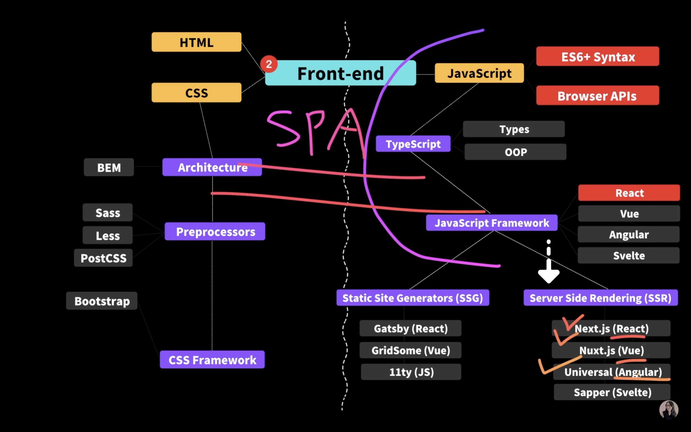
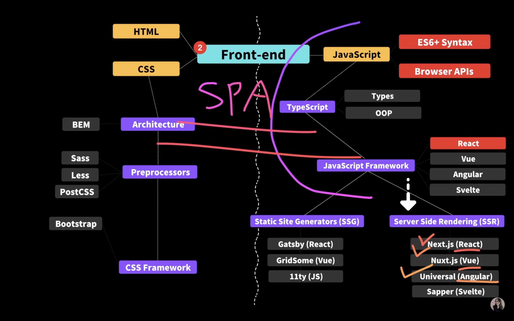

1 문단문단
문단
2 문단
3 문단
4 문단
5 문단
b태그는 글자를 굵게만 만들지만
strong 태그는 그 내용이 중요하다는 의미 또한 담고 있다.이들이 굴게보이는 것 또한 브라우저의 기본 설정일 뿐, 이러한 디자인 요소는 css로 지정해 주어야 한다.
i 태그는 글자를 기울여 준다.
em 태그는 i와 같이 기울여 주지만 강조할 내용임을 명시한다.
예시
Warning!this is very dangerous!
I love you
I love you
지수 또는 밑 첨자 표현 sup, sub
x3
H2O
단순히 글자를 작게하기 위해서 사용하면 안됨!
작게하기 위해선 css 를 이용!
u태그와 s 태그
u태그는 과거 밑줄을 긋는 용도로 사용되었으나
현재는 css효과와 함께 철자 오류 등을 강조하는 용도로 사용된다.
fajkdslfas
s 태그는 더 이상 유효하지 않는 정보를 취소선과 함께 나타낸다.
fksdafadsf
<blockquote> 요소는 인덱스
 
